Varad Pimpalkhute
I work on the science and systems of reinforcement learning for LLM agents.
I'm a Research Scientist at the Institute of Foundation Models (MBZUAI) in Sunnyvale, where I lead a small group within the post-training team on RL for reasoning, software-engineering, terminal, and deep-research agents.
I led RL360, IFM's agentic RL infrastructure, which trained K2 Horizon's domain experts, and I led coding-agent task development and post-training for K2 Horizon. I built and scaled our asynchronous RL infrastructure, reaching 4× the throughput of a synchronous RL baseline, and stabilized post-training across 375B MoE and 70B dense models on 1000s of GPUs. I've been a core post-training contributor on every K2 release and co-led the K2-Think-V2 release. I also study how RL compute should be spent (IsoCompute).
Before IFM, I was at Articul8 (where I trained an 8B Verilog code model end to end), AI2, Amazon, Cedars-Sinai (RADS Scholar), and TCS Research. I did my MS in Computer Science at UMass Amherst and my BTech at IIIT Nagpur.
If you're working on agentic RL, RL environments, or the science of scaling RL, I'd love to hear from you.
News
Now Oct 2026 Scaling off-policy RL for agents: data reuse, critical batch size, and compute-optimal training of reasoning models. RL360 is now open source.
- Oct 2026 We open-sourced RL360, the RL infrastructure behind K2 Horizon. [thread]
- Sep 2026 K2 Horizon is out: six fully open models, from 0.9B to 375B.
- Sep 2026 UNO: up to 3× lossless LLM speedups via discrete diffusion.
- May 2026 Self-regulated simulative planning for efficient agentic reasoning.
- Mar 2026 Talked about K2 Think V2 at HARD MODE, the MIT Media Lab's hardware × AI hackathon, and judged the projects.
- Jan 2026 IsoCompute Playbook: how to scale sampling compute for LLM RL (arXiv in March). [thread]
- Dec 2025 K2-V2, a 360-open, reasoning-enhanced LLM, is released.
- Oct 2025 ReviveAgent won Best Self-Improving Agent at WeaveHacks 2 (Weights & Biases × Google Cloud).
- Sep 2025 K2-Think, a parameter-efficient reasoning system, is released.
- Jun 2025 Joined the Institute of Foundation Models as a Research Scientist.
- Jun 2024 Joined Articul8 as an Applied AI Researcher.
- May 2024 Finished my MS in Computer Science at UMass Amherst.
- Mar 2024 SoftQE presented at ECIR 2024.
- Jan 2024 Joined AI2 as a graduate student researcher.
- May 2023 Applied Scientist intern at Amazon; RADS Scholar at Cedars-Sinai.
- Apr 2023 Our fair course-completion model won Best Overall Student Project at UMass Amherst's Seldonian Toolkit Competition.
- Jan 2023 GEMS presented at WACV 2023.
- Sep 2022 Started my MS in Computer Science at UMass Amherst.
- Jun 2022 MetaFaaS presented at BiDEDE @ SIGMOD 2022.
- Jun 2021 Presented our health-tweet classification work at the SMM4H workshop at NAACL 2021, where I also reviewed for the first time.
- May 2021 Defended my undergraduate thesis and graduated from IIIT Nagpur.
- Jan 2021 Our paper on digital image noise estimation appeared in IEEE Transactions on Image Processing.
- Nov 2020 Our W-NUT 2020 shared-task system ranked 13th worldwide.
- Jul 2020 Research intern at the HLP Lab, University of Pennsylvania.
- May 2020 Started at TCS Research & Innovation Labs, Mumbai, working on meta-learning.
- Mar 2020 Our sleep-stage CAP classification paper appeared in Computers in Biology and Medicine.
- 2019 SPIN 2019 paper on early-stage Parkinson's detection; TA for Signals & Systems and the ACM-W Summer School on Algorithmic Game Theory.
- Dec 2018 Research intern at IIT Gandhinagar, where I was introduced to algorithmic game theory.
Research
I'm interested in how RL post-training scales: how to spend compute, how to build systems that keep thousands of agents learning, and how to ship it in open frontier models. Highlighted work is shaded.
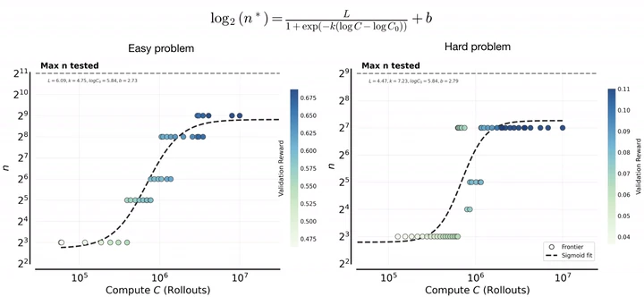
IsoCompute Playbook: Optimally Scaling Sampling Compute for LLM RL
The compute-optimal number of rollouts per problem grows predictably with budget, then saturates. Extra rollouts sharpen the policy on easy problems and expand coverage on hard ones. I helped frame the problem and design the experiments, and stress-tested the findings at scale on larger models.
Try it: how many rollouts per problem?
| C (rollouts) | n*, easy | n*, hard |
|---|---|---|
| 10⁵ | 7 | — |
| 3 × 10⁵ | 13 | 9 |
| 10⁶ | 118 | 73 |
| 3 × 10⁶ | 372 | 149 |
| 10⁷ | 444 | 153 |
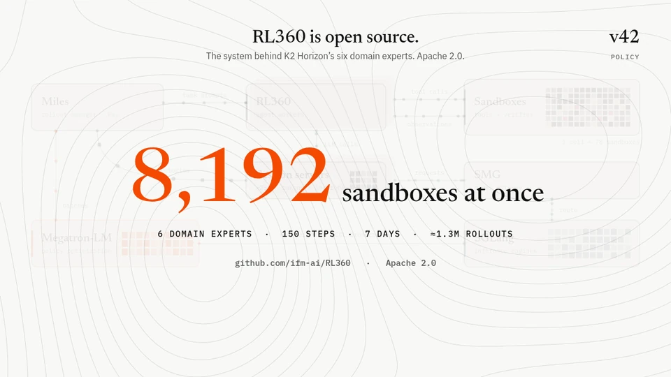
RL360: Agentic RL Infrastructure for K2 HorizonLEAD
Open-source agentic RL at scale: 8,192 concurrent sandboxes and about 1.3M rollouts in 7 days. Rollouts, sandboxes, inference, and training scale independently, and infra failures are masked out of the loss instead of being scored as wrong answers.
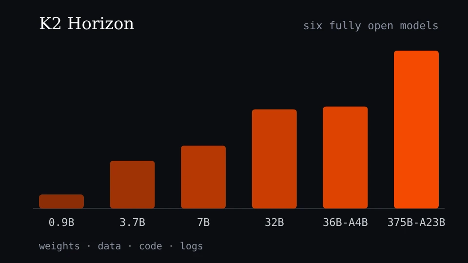
K2 Horizon: Frontier Performance, Radically OpenCODING-AGENT LEAD
Six fully open models, up to 375B-A23B, released with weights, data, code, and logs; the 375B scores 70.2 on Terminal-Bench 2.1 and 42.6 on SWE-Bench Pro (strict, no internet). I led coding-agent task development and post-training (SWE and terminal environments, rollout and evaluation pipelines), and RL360 trained its domain experts.
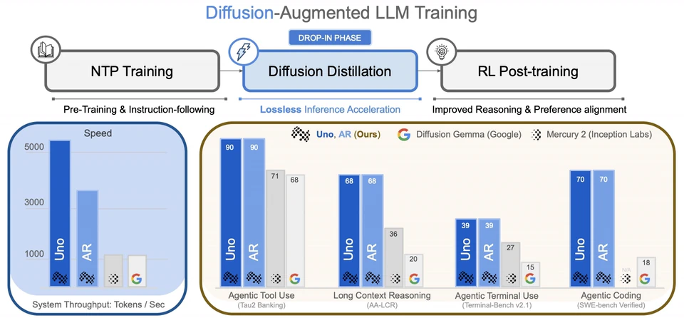
Unlocking Lossless Speedups in LLMs via Discrete Diffusion
UNO adds lightweight diffusion weights to an autoregressive LLM to decode several tokens at once: up to 3× faster generation with the base model's distribution preserved, and no draft model.
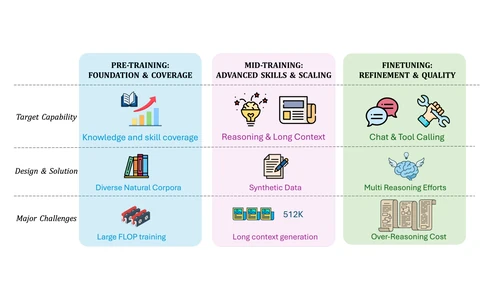
K2-V2: A 360-Open, Reasoning-Enhanced LLMCORE CONTRIBUTOR
A fully open, reasoning-enhanced LLM, released with its data, code, and training logs. I worked on post-training and evaluation, and co-led the K2-Think-V2 technical blog and release.
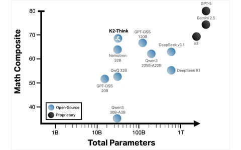
K2-Think: A Parameter-Efficient Reasoning SystemCORE CONTRIBUTOR
A 32B reasoning system that outperforms larger open-weight models across reasoning benchmarks through optimized post-training and inference.
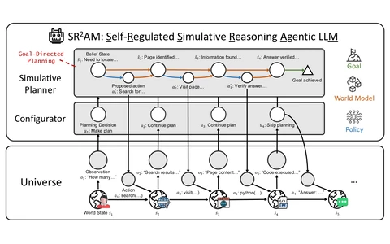
Efficient Agentic Reasoning through Self-Regulated Simulative Planning
An agent that learns when and how deeply to plan, using simulated look-ahead only where it pays off.
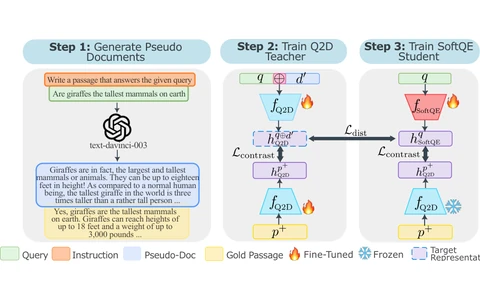
SoftQE: Learned Representations of Queries Expanded by LLMs
A query encoder that distills LLM query expansion into the embedding itself: better dense retrieval (+2.8%) with no added latency.
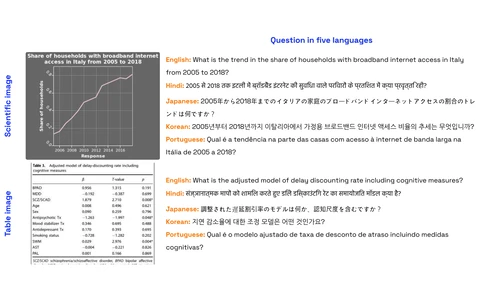
DocQIR-Emb: Document Image Retrieval with Multi-lingual Question Query
Earlier research
Before LLMs, I worked on meta-learning and efficient training at TCS Research, health NLP at the University of Pennsylvania, signal and image processing at IIIT Nagpur, and computational social choice at IIT Gandhinagar.
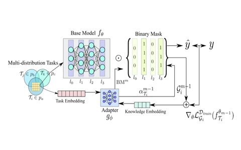
GEMS: Generating Efficient Meta-Subnets
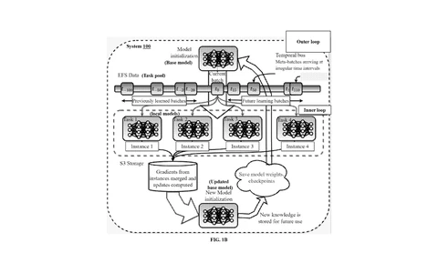
MetaFaaS: Learning-to-learn on Serverless
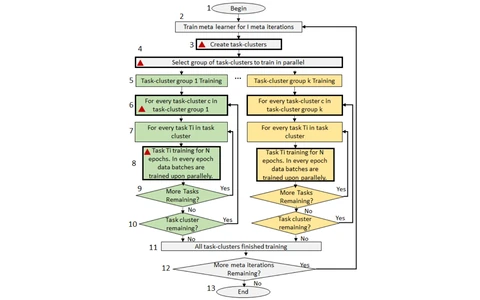
Accelerating Gradient-based Meta Learner
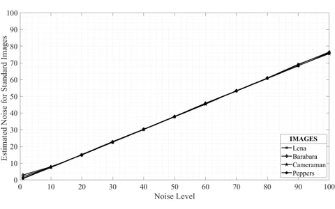
Digital Image Noise Estimation using DWT Coefficients
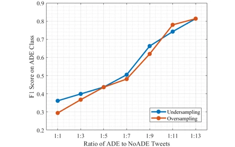
Transformer Models for Classification on Health-Related Imbalanced Twitter Datasets
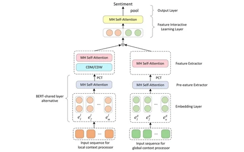
Geolocation Extraction for Twitter (undergraduate thesis)
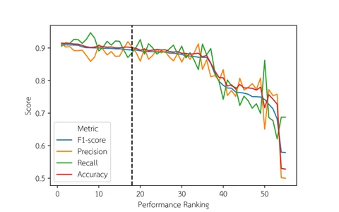
Transformer Models for Classification of COVID-19 Posts on Twitter
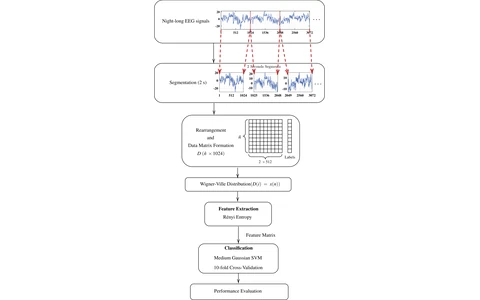
Automated Phase Classification in Cyclic Alternating Patterns in Sleep Stages using Wigner–Ville Distribution Features
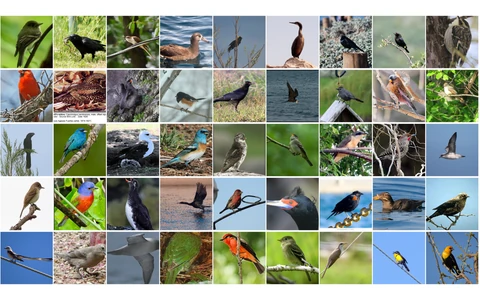
CBIR using Pre-Trained Neural Networks
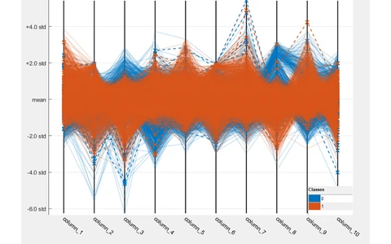
Early Stage Detection of Parkinson's Disease using Correlation Coefficients and Haar Transform
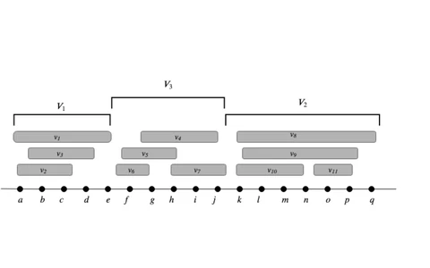
Multiwinner Voting with Admissible Sets
Miscellanea
- Talks
- K2 Think V2, at HARD MODE, the MIT Hardware × AI Hackathon, MIT Media Lab2026
- Awards
- Best Self-Improving Agent, WeaveHacks 2 (Weights & Biases), for ReviveAgent with Shaurya Rohatgi and Vibhakar Mohta2025
- Best Overall Student Project, Seldonian Toolkit Competition, UMass Amherst, with Sahil Yerawar and Pranay Reddy2023
- Press
- K2-Think-V2, a fully sovereign reasoning model (MBZUAI)
- K2 Think, MBZUAI and G42 launch K2 Think2025
- Articul8's chip-design model, Verilog-capable and 2× open-source baselines (Fierce Electronics)2025
- Patents
- Service
- Reviewer for NeurIPS, ICLR, TMLR, EMNLP, and NAACL, and for Nature Communications, IEEE Transactions on Image Processing, and Elsevier journals
- Judge, HARD MODE hackathon, MIT Media Lab2026
- Teaching
- Industry mentor for MS research projects, UMass Amherst
- Graduate TA, UMass Amherst2024
- TA, ACM-W Summer School on Algorithmic Game Theory, IIT Gandhinagar (schedule, 16 MB PDF)2019
- TA, Signals & Systems, IIIT Nagpur (course overview / question bank (29 MB zip) / IIR filter notes)Fall 2019
- Collaborations
- IESL, UMass Amherst, with Andrew McCallum: box embeddings for hierarchical representations
- Fatima Fellowship, with Maruan Al-Shedivat: gradient hacking to reduce interference in multi-task training
- Projects
- Metabolts, a meta-learning library on PyTorch Lightning, with Sébastien Arnold
- Through the Bias-oscope, on bias in text-to-image models, with Subhransu Maji
- Function calls vs. parametric knowledge, and mitigating hallucination in LLM responses
- Load Test Framework, load testing and performance benchmarking
- Financial Reports Chatbot, question answering over financial reports
- Notes
- Lecture series on Fair Division and Computational Social Choice